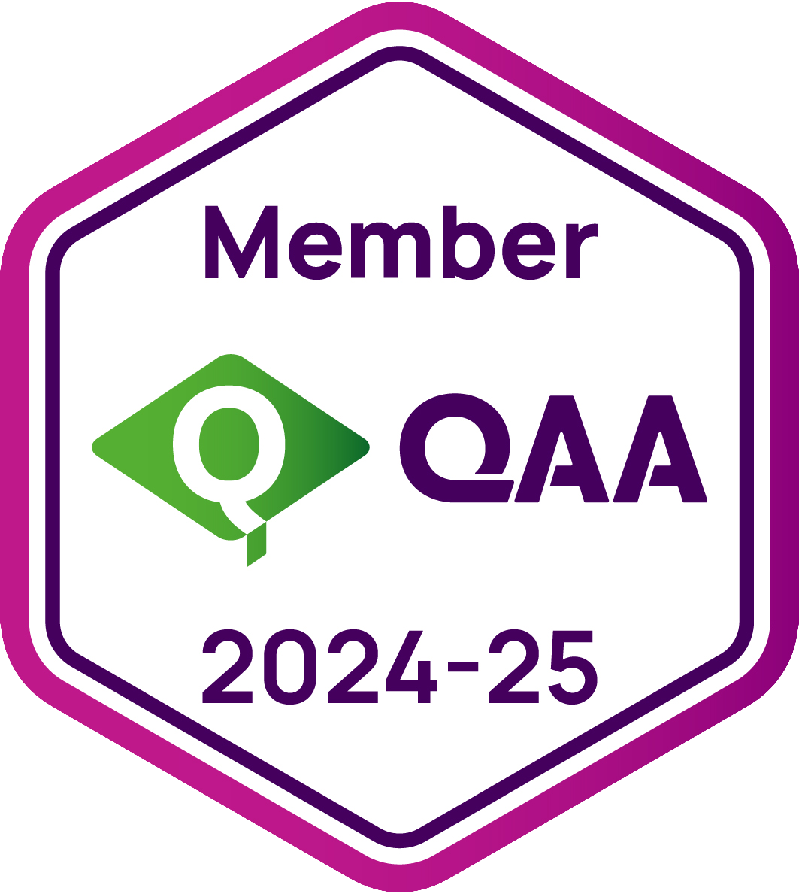
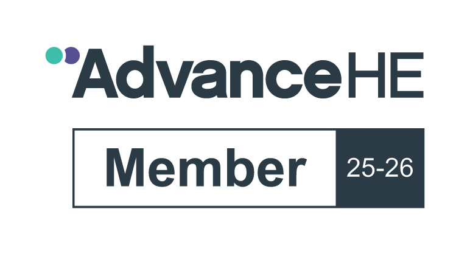

Explore the Accrediting Bodies and Partners of the United Kingdom Education Centre (UKEC). Here, we proudly showcase the esteemed organisations that recognise and validate the quality of our educational offerings. Our partnerships with these accrediting bodies not only signify our commitment to maintaining the highest academic standards but also enhance the value of the qualifications we offer. These collaborations ensure that our courses remain relevant, rigorous, and aligned with industry demands, thereby empowering our students with the credentials and skills necessary to excel in their careers. Discover the prestigious entities that support and accredit UKEC, reinforcing our mission to deliver top-tier education and training.

The Quality Assurance Agency for Higher Education (QAA) is the UK’s independent body dedicated to upholding and enhancing academic standards in higher education. As a QAA member, UKEC aligns with a globally recognised framework of quality assurance, best practices, and continuous improvement. QAA plays a crucial role in safeguarding the integrity of UK higher education by setting rigorous benchmarks that institutions must meet to ensure excellence in teaching, learning, and student experience. Membership provides access to specialist guidance, expert-led training, and collaborative networks, reinforcing our commitment to delivering high-quality, career-focused education. By adhering to QAA’s principles, UKEC demonstrates its dedication to maintaining internationally recognised academic standards while equipping students with the knowledge and skills to thrive in an ever-evolving professional landscape. To learn more about QAA and its impact on higher education, visit https://qaa.ac.uk.

The Association to Advance Collegiate Schools of Business (AACSB) is a globally renowned accrediting body committed to promoting excellence, innovation, and impact in business education. Recognised as the gold standard in business school accreditation, AACSB works with institutions worldwide to enhance the quality, relevance, and effectiveness of business and management education. Membership with AACSB provides access to cutting-edge research, global networking opportunities, and best practices, ensuring that institutions remain at the forefront of academic and industry advancements. By aligning with AACSB’s rigorous standards, UKEC strengthens its commitment to delivering high-quality, industry-aligned business education that prepares students for leadership roles in a dynamic global economy. Through AACSB’s emphasis on continuous improvement, ethical business practices, and impactful learning experiences, UKEC ensures that its programmes equip students with the skills, knowledge, and global perspectives needed to excel in the modern business landscape. Learn more at https://www.aacsb.edu.

Advance HE is a globally recognised organisation dedicated to enhancing teaching excellence, leadership development, and inclusivity in higher education. As a key advocate for academic quality and professional development, Advance HE supports institutions in fostering innovative learning environments, impactful leadership, and continuous improvement. Membership with Advance HE provides UKEC with access to cutting-edge research, expert-led training, and a global network of educators and academic leaders, reinforcing our commitment to delivering high-quality, student-centred education. Through Advance HE’s Teaching Excellence Framework (TEF), leadership programmes, and accreditation services, UKEC aligns with international best practices that enhance teaching standards, faculty development, and student outcomes. By engaging with Advance HE’s initiatives, UKEC ensures that its academic community remains at the forefront of educational innovation, inclusivity, and continuous professional development. To learn more about Advance HE and its role in shaping the future of higher education, visit https://www.advance-he.ac.uk.
The Chartered Management Institute (CMI) is a renowned professional institution based in the United Kingdom. Established in 1948, the CMI is the only chartered professional body dedicated to promoting the highest standards in management and leadership excellence.
CMI offers a variety of services including training, qualification certification, and membership services. Its certifications are recognized worldwide and are often sought after by professionals seeking to enhance their managerial skills, knowledge, and qualifications.
The CMI is committed to raising the standard of management practices, helping individuals develop their managerial skills and endorsing the professional status of managers across various sectors. It offers a range of resources and support to its members, including access to professional networks, continued professional development resources, research materials, and advice.
The Chartered Management Institute (CMI) has formally recognized and granted accreditation to select courses offered by the United Kingdom Education Centre (UKEC). This acknowledgment by CMI underscores the quality and relevance of United Kingdom Education Centre's curriculum in meeting the rigorous academic and professional standards set by this esteemed institution.
The Awards for Training and Higher Education (ATHE) is a renowned international awarding organization based in the United Kingdom. ATHE is regulated by Ofqual (the Office of Qualifications and Examinations Regulation), and its qualifications are recognized worldwide.
ATHE provides a wide range of qualifications in areas such as business management, health and social care, travel and tourism, and computing. These qualifications are flexible and accessible, providing clear progression pathways to university degrees or employment. ATHE's qualifications are designed with input from colleges and sector skills councils to ensure that they meet current industry needs.
Qualifi is a recognized UK awarding organization regulated by Ofqual, renowned for providing internationally respected vocational qualifications. The organization offers a diverse range of accredited qualifications across various levels, from diplomas to postgraduate and professional levels, across a wide array of fields. These fields include business management, health and social care, cybersecurity, and hospitality, among others.
Qualifi's qualifications serve as a pathway to university degree and postgraduate programs, allowing learners to progress academically and professionally. The organization is committed to delivering accessible and affordable quality qualifications that enhance learners' skills, competencies, and career opportunities.

The International Council of E-Commerce Consultants (EC-Council) is a globally recognised leader in cyber security certification and education. As an official EC-Council Academia Partner and Accredited Training Centre, United Kingdom Education Centre is authorised to deliver EC-Council’s industry-aligned training and certifications. This partnership ensures our students receive cutting-edge cyber security knowledge, access to official course materials and labs, and the opportunity to earn globally respected credentials.
EC-Council’s recognition spans governments, academia, and businesses worldwide, reinforcing our commitment to high-quality, practical education in the cyber security domain.
The University of London is a prestigious, public university located in London, England. Established by royal charter in 1836, it is one of the oldest and most respected universities in the UK. It is a federal university comprising 17 independent member institutions with outstanding global reputations and several prestigious central academic bodies and activities.
The University of London offers a wide array of programs ranging from the humanities to the sciences. It is particularly known for its innovative approach to distance learning and online education through its University of London Worldwide platform, which allows students from all over the globe to pursue its degrees.
The University of London has a rich tradition of academic excellence and has been home to numerous notable alumni, including many Nobel laureates, leaders in global politics, and pioneers in various fields of research and creativity.
The university is recognized for its commitment to inclusivity and diversity, hosting students from over 180 countries. The University of London continues to be a leading institution in higher education, known for its high academic standards, rigorous research, and a vibrant student experience.
The University of Greenwich is a distinguished public university situated in London, England. Established in 1890 as Woolwich Polytechnic, it has evolved over the years into a modern institution renowned for its commitment to academic excellence and inclusivity.
The university offers a comprehensive range of programs across various disciplines, including business, engineering, humanities, and sciences. Its curriculum is designed to equip students with practical skills and theoretical knowledge, preparing them for successful careers in their chosen fields.
The University of Greenwich boasts a vibrant and diverse community, attracting students from over 140 countries. This multicultural environment fosters a global perspective, enriching the learning experience and promoting cross-cultural understanding.
Notable alumni include Nobel laureates such as Charles Kao, recognized for his groundbreaking work in fiber optics, and Abiy Ahmed, the Prime Minister of Ethiopia and recipient of the Nobel Peace Prize. The university also counts acclaimed author Malorie Blackman and actor John Boyega among its distinguished graduates.
The university’s main campus is located in the historic Royal Borough of Greenwich, a UNESCO World Heritage Site. The campus features iconic buildings designed by Sir Christopher Wren, providing a unique blend of historical significance and modern facilities.
Committed to research and innovation, the University of Greenwich addresses global challenges through its cutting-edge projects. Its research initiatives span various fields, contributing valuable insights and advancements that benefit society at large.
The University of Greenwich continues to uphold its mission of providing quality education, fostering research excellence, and promoting social mobility. By nurturing talent and encouraging innovation, it plays a pivotal role in shaping the leaders and professionals of tomorrow.
Coventry University is a public research university located in Coventry, England. Established as a university in 1992, it has a rich history dating back to 1843 when it started as the Coventry School of Design.
Coventry University is recognized for its innovative approach to teaching and learning, strong student support, and excellent graduate employability. It offers a broad range of undergraduate and postgraduate programs across various disciplines including engineering, business, health, and the arts. The university is known for its industry-relevant curriculum, modern facilities, and its commitment to internationalization, which is reflected in a large, diverse student body from over 150 different countries.
Coventry University has received numerous accolades for its quality of education, including being named 'University of the Year' by the Times and Sunday Times Good University Guide 2019.
The University of Central Lancashire (UCLan) is a dynamic and renowned higher education institution located in Preston, Lancashire, UK. Founded in 1828 as the Institution for the Diffusion of Useful Knowledge, UCLan has grown into one of the UK's largest universities, offering a wide range of undergraduate and postgraduate courses. The university is known for its commitment to research excellence, innovative teaching methods, and strong industry connections that enhance student employability. With a vibrant campus life and a diverse international student population, UCLan provides a supportive and inclusive environment for students from over 100 countries, fostering a global learning community that prepares graduates for successful careers in their chosen fields.
Hong Kong Business Administration College of Asia

Reach out to us with your inquiries, feedback, or collaboration ideas. We'd love to hear from you!
Button TextUnited Kingdom Education Centre provides recognized corporate training and consulting services to over 80 organisations across 12 countries in Asia. Recognized through ATHE (UK), a UK Government recognized award-winning body, United Kingdom Education Centre has trained over 1000 corporate executives for the last two years. Not only are our programmes based on the latest academic research, but we ensure that all our content has practical, real-world application. Making this leap is only possible by hiring the most exceptional talent in the industry, something United Kingdom Education Centre prides itself in. Each individual, team and organization has unique challenges and therefore a key philosophy of United Kingdom Education Centre is ensuring customised training content. With well over a hundred engaging and interactive programmes offered, United Kingdom Education Centre is the necessary answer to your training partner needs in today's complex world.
United Kingdom Education Centre is recognized by ATHE (UK). ATHE is an OFQUAL (The Office of Qualifications and Examinations Regulation), UK Government recognized awarding body. Awards for Training and Higher Education (ATHE) provides centres with a wide variety of qualifications including, but not limited to; administration management, business, tourism, law, computing and health and social care. We have made a name for ourselves with exceptional customer service, excellent quality standards and rewarding qualifications with progression routes to university degrees.Easily edit sections with clear class naming conventions.
Show certificateMEET OUR EXPERTS

United Kingdom Education Centre (UKEC) provides internationally recognized programs for individuals and organizations to help executives expand their global prospects.
United Kingdom Education Centre is known as a leading undergraduate, postgraduate programmes, and corporate training programmes provider serving over 100+ organisations across 15 countries in the Asia-Pacific region. We are accredited by UK-Government regulated awarding bodies including ATHE and QUALIFI. Moreover, we pride ourselves on our worldwide network of over 1500 successful alumni of corporate executives and senior managers.
United Kingdom Education Centre classroom is a futuristic learning environment that enables students to access their classes and study material in convenient, affordable formats that are easily accessible by any smart device.
Mobilising the most exceptional talent in the industry, United Kingdom Education Centre provides the latest academic research-based studies with content that has practical, and real-world applications. Our smart learning method includes student centred, highly advanced innovative methods of hands-on learning where the participants are taught and empowered by trained professionals.
Our philosophy is ensuring customised education and training content which is achieved through a task-based learning approach so that our trainees are taught, trained, and challenged in over a hundred engaging and interactive programmes offered. United Kingdom Education Centre is your ideal training partner for highly customized, adaptive executive training in the current constantly changing and increasingly digital corporate world.
"Our vision is to be the preferred corporate training and premier higher education service provider through innovative technology solutions."
If you aim to achieve your maximum potential and accomplish your career aspirations, United Kingdom Education Centre is your choice of success. Here is why:

United Kingdom Education Centre's highly versatile virtual learning model permits you to study at your convenience. Digital learning platforms are considerate of your busy schedule, so at United Kingdom Education Centre you are given the power to choose when, where, and how you study. This distance learning model with a blended learning approach encourages interaction between the tutor and the learners as they are participating in learning activities where academic support and feedback are available. Moreover, the students can continue using their devices while studying with no need for extra paperwork nor time spent.Highly learner-centred teaching approach.
A strong focus on developing the student's understanding of specific subject matter with a real-world application is the key to our decentralized learning approach. The undergraduate or the graduate student is encouraged to digest the subject content and use it to solve problems with a task-based assignment. This ensures two-way communication and industry-ready professional growth.
We offer quality education in a competitive price range. Our easy payment schemes are both practical and affordable. This ensures you have access to a world-class education, and that you will become leaders of the modern-day world of work. You can visit our website to find out more to get the convenience of installment-based payment schemes.
The courses are designed to give you the skills you need for success in your career or elsewhere. The practical problem-based innovative learning experience at United Kingdom Education Centre, does not rely on archaic learning practices such as final exams. Instead, the assessment process is highly formative where the learner is challenged to transfer both the knowledge and skills they have acquired into real-life experiences so that the certification they earn ensures that they have personally achieved the learning goals of each module.
Highly customized tutorials are given by the expert faculty who are chosen among the industry experts. Our trained specialists help you with your schoolwork, study materials, assignment guidance and personal development activities so that you achieve greater academic success throughout your life and improve social mobility. Our college offers more intensive mentorship programs than other institutes use traditionally.
All academic programmes delivered by United Kingdom Education Centre are accredited and recognized by Qualifi certification which identifies mission-critical learning requirements while assesses outcomes of programmes to achieve consistent, recognised professional and academic standards in addition to the Awards for Training and Higher Education (ATHE) who specialize in evaluations and appraisals in vocational qualifications.
Qualifi achieves its mission by utilizing UK Regulators to ensure that they meet specific criteria, quality standards, and meeting the standards of General Conditions of Recognition in England.
OFQUAL is a non-ministerial government department with jurisdiction in England which is known for its promise to uphold reliability and world class standards.


Payment Terms
Pay in Full: £3,200